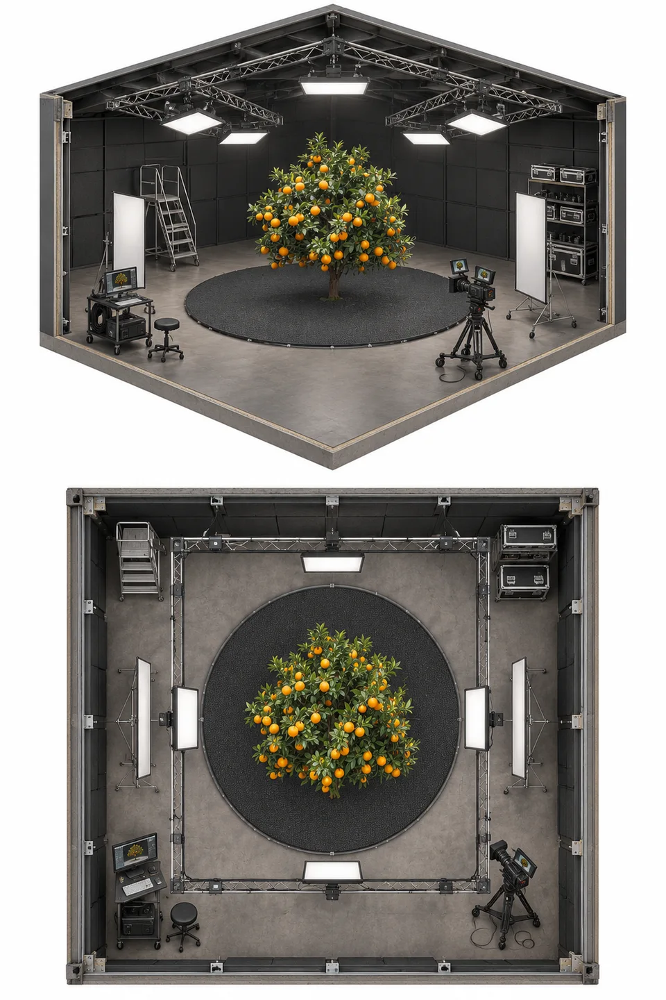
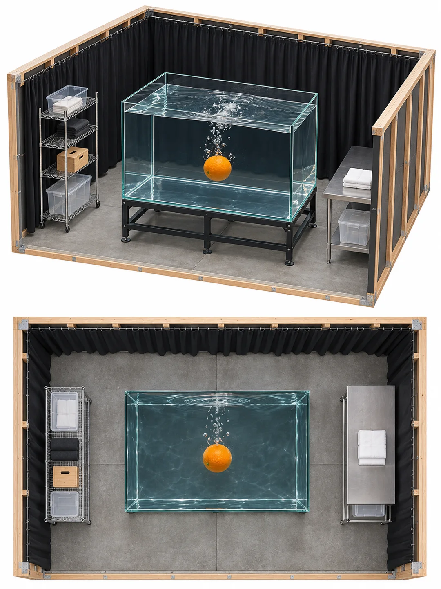
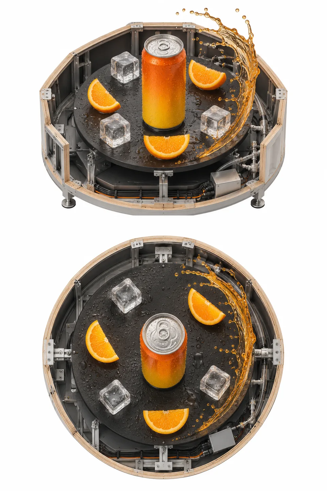
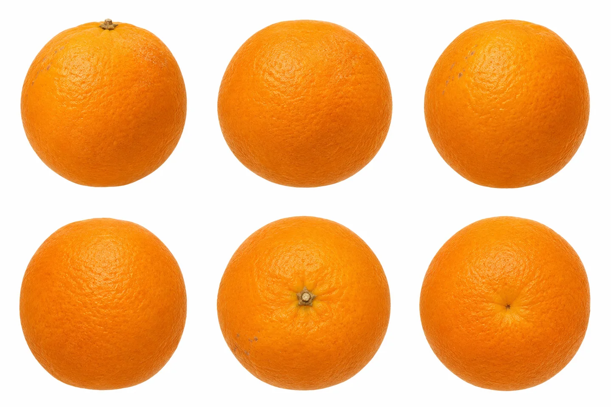
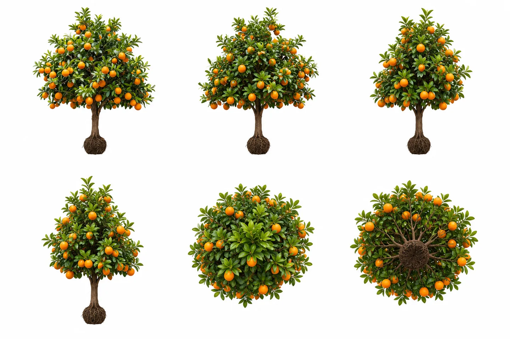
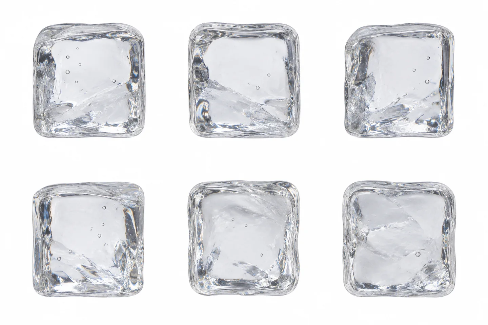
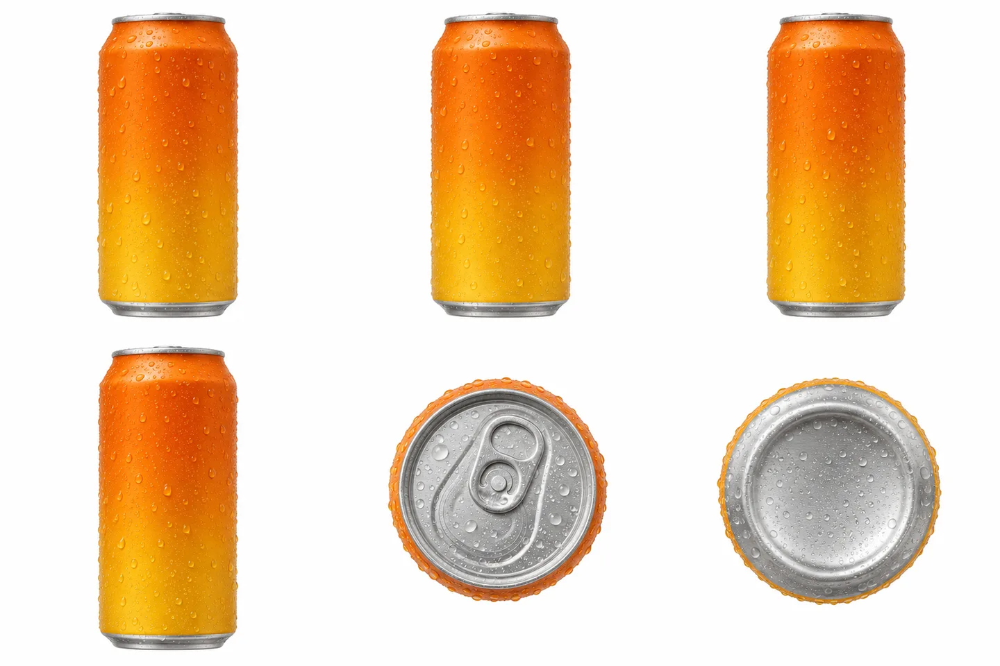
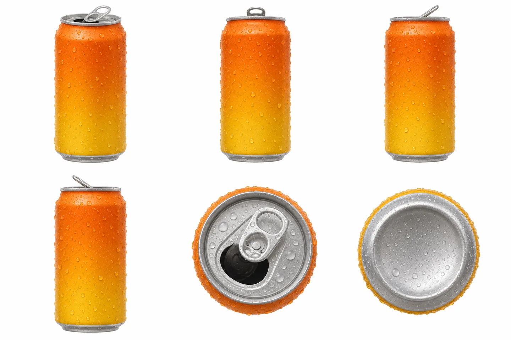
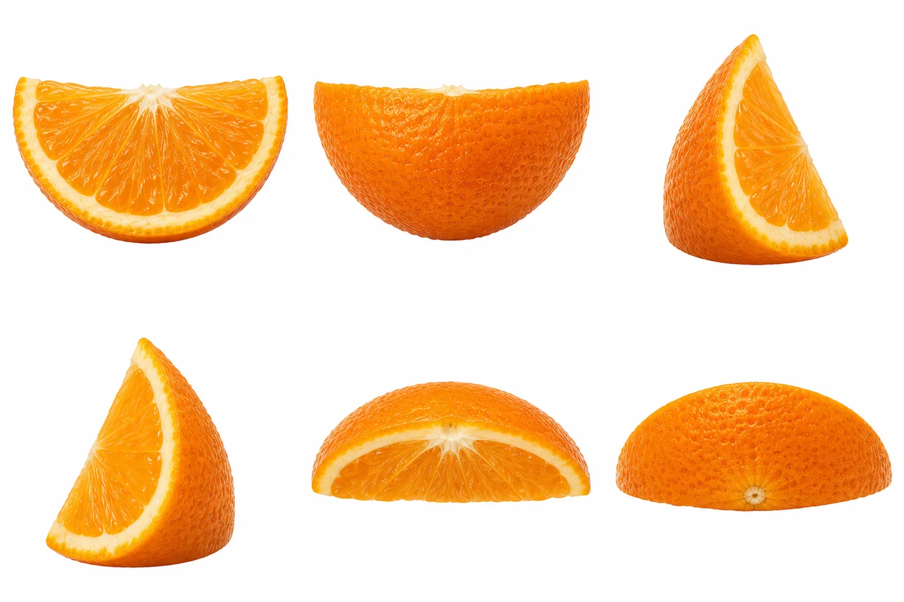

橘光迸发
AIGC · 产品广告
作品简介
镜头从挂果橙树推进到一颗熟橙，跟着果实入水看见上升的气泡。果瓣、冰块与开罐镜头依次接上，最后收在斜置的橙味汽水罐。鲜果、气泡与水花分别交代口味、气感和冰爽感。
制作资产
点击图片放大查看
场景与布景


场景设定用于「黑场里显出结果树」段落。先露出树冠暖点，再推入叶簇。


场景设定用于「橙子没入水下」段落。下沉的果实拖出一列透明气泡。


场景设定用于「果冰围绕汽水罐」段落。果瓣、冰块与暖色汽水在罐周围交错飞起。
道具与产品


枝上特写、坠落和入水都使用同一整橙，果皮颗粒与蒂眼保持连贯。


片头橙树。深绿色有蜡质叶、饱满橙果、深棕直树干。六视保持同一冠形。


围绕罐体的透明冰方，内部气泡少，轮廓以略钝方角为主。


成品罐的封口状态。橙黄罐身、银盖和冷凝珠。外观色彩保留，包装文字与标识清空。


开盖细节的连续性状态。翻起拉环、开启的饮口、罐肩水珠；罐身外形与封口版相同。


产品周围飞散的鲜切果片；保持橙皮、白瓤与果肉的可辨厚度。